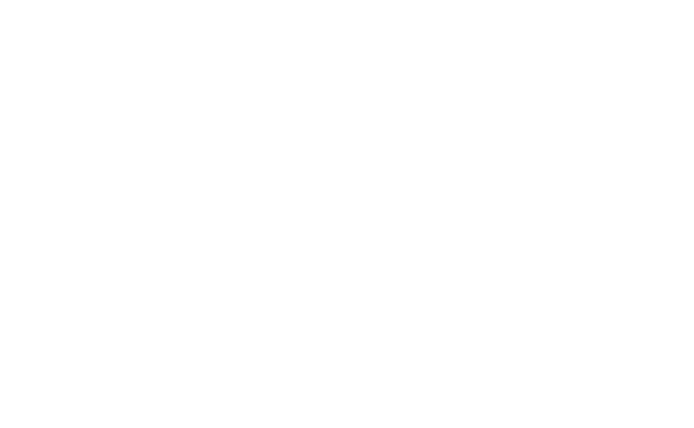
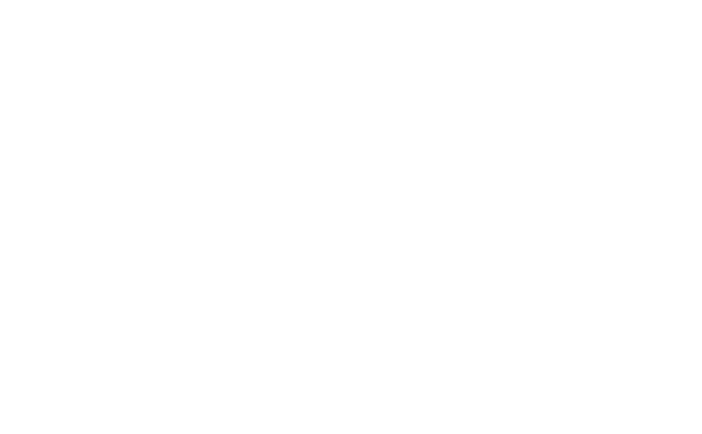

An alternative to the ls_plot_static() function. The main benefit of the density plot is that regions od the landscape are coloured according to frequency, making it easier to detect potentially-meaningful clusters via visual inspection.
Arguments
- df
Data frame or tibble object
- x_var
Variable with your co-ordinates for the x-axis
- y_var
Variable with your co-ordinates for the y-axis
- bins
numeric vector giving number of bins in both vertical and horizontal directions. Set to 100 by default.
- legend_height
value in centimetres (decimals allowed)
- legend_width
value in centimetres (decimals allowed)
Details
Setting bins to a lower value will mean the counts are higher, but the overall resolution of the plot is lower. The legend_* arguments specify the aesthetic appearance of the legend. You can override these parameters by simply calling the function and adding ggplot theme() and guides() inputs
The data frame should be in un-summarised or long format, i.e. one row per document.
Examples
ls_example %>%
ls_plot_density(V1, V2, bins = 150)
#> Warning: Computation failed in `stat_binhex()`.
#> Caused by error in `compute_group()`:
#> ! The package "hexbin" is required for `stat_bin_hex()`.

#Change the legend:
ls_example %>%
ls_plot_density(V1, V2, bins = 75) +
ggplot2::theme(
legend.position = "right",
legend.key.width = ggplot2::unit(0.25, "cm"),
legend.key.height = ggplot2::unit(1.5, "cm")) +
ggplot2::guides(fill = ggplot2::guide_colorbar(title.position = "right"))
#> Warning: Computation failed in `stat_binhex()`.
#> Caused by error in `compute_group()`:
#> ! The package "hexbin" is required for `stat_bin_hex()`.
